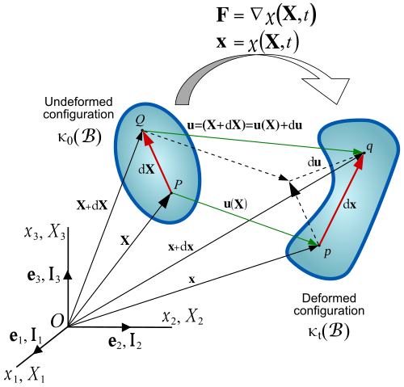
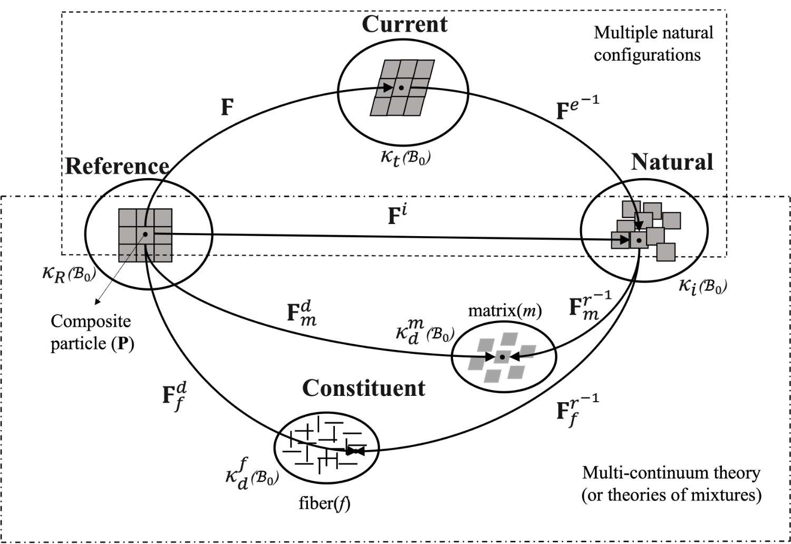
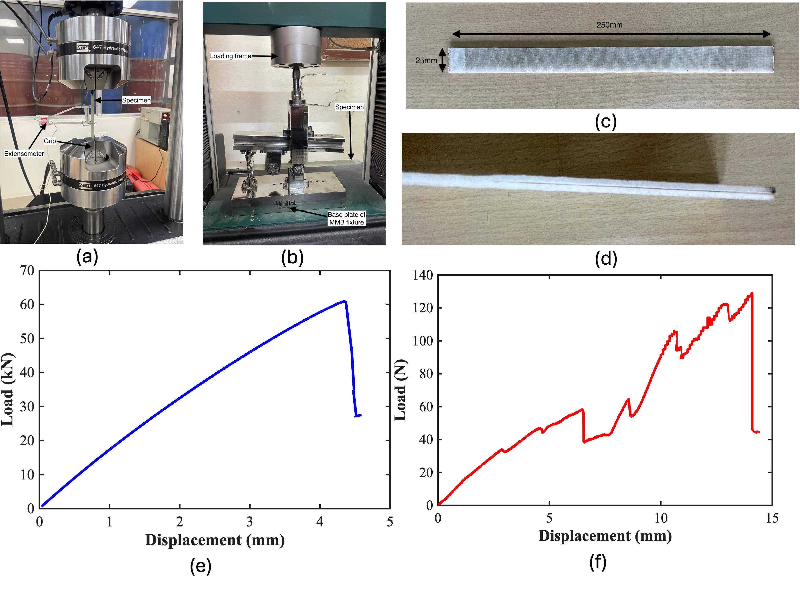
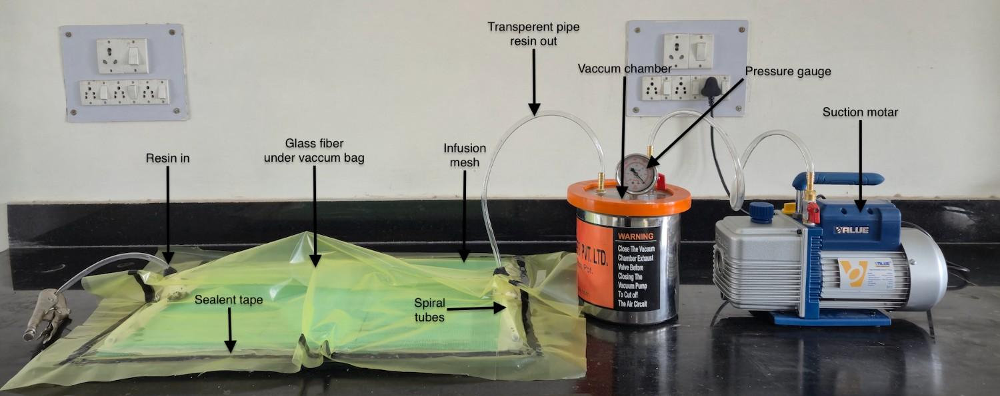
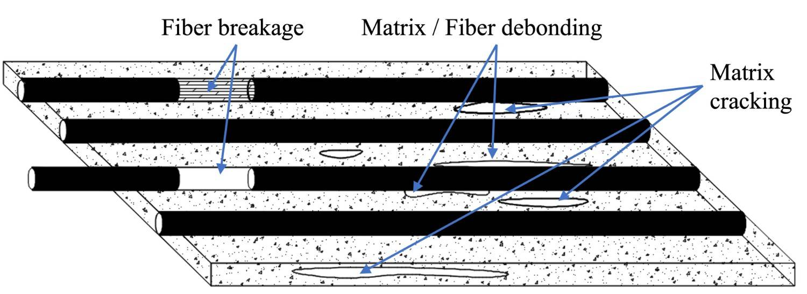

Research Interests
My investigations are centered upon nonlinear continuum mechanics, finite deformation kinematics, constitutive modeling, and experimentally informed damage characterization of advanced fiber-reinforced laminated composite systems. The principal emphasis of my research lies in the formulation of rigorous multiscale frameworks capable of describing complex deformation processes, constituent-level damage evolution, and geometric incompatibilities arising in composite materials subjected to finite strain regimes.

Core Themes of My Research

Finite Deformation Mechanics
My work employs multicontinuum theory proposed by Bedford and Stern together with the theory of multiple natural configurations developed by Rajagopal and Srinivasa for modeling nonlinear deformation and damage evolution in fiber-reinforced composites subjected to finite strains.

Experimental Investigation
Experimental studies involve tensile testing, mixed-mode bending experiments, delamination analysis, and progressive damage characterization of laminated composite materials.

Composite Materials
The developed framework is applicable to both stiff composite systems such as CFRP and GFRP laminates, as well as soft architected composite systems including biological tissues, elastomeric composites, and origami-inspired structures.

Damage Mechanics
Damage evolution is characterized through matrix cracking, fiber breakage, interfacial slip, debonding, and delamination using incompatibility tensors, relative constituent motion, and differential geometric measures.
Damage Characterization
Matrix Cracking
Matrix crack density tensor representing incompatibility associated with matrix damage.
Fiber Breakage
Fiber breakage quantified using incompatibility of the fiber configuration.
Interfacial Slip
Relative constituent motion governs interfacial slip and debonding.
Delamination
Delamination represented through displacement discontinuity across interfaces.
Geometric Interpretation of Damage
Differential geometric tools are employed to establish rigorous incompatibility interpretations associated with constituent-level damage evolution in composite materials. The torsion tensor corresponding to each natural configuration provides a geometric measure of incompatibility arising due to matrix cracking, fiber breakage, interfacial slip, and delamination mechanisms.
Matrix Configuration Torsion
The torsion tensor associated with the matrix natural configuration provides the geometric incompatibility corresponding to matrix crack evolution.
Fiber Configuration Torsion
Fiber breakage induces torsion within the fiber natural configuration and acts as a geometric measure of incompatibility.
Interface Incompatibility
Interfacial incompatibility measures describe the geometric discontinuity associated with delamination and interfacial damage.
Total Delamination Torsion
The total torsion field combines bulk and interface incompatibility contributions corresponding to delamination-induced geometric defects.
Research Activities
Completed DST-SERB Project
Assessment and modeling of damage in fiber reinforced laminated composites for large deformation processes using multicontinuum theory and experiments.
Current Work
Current investigations focus on microfiber buckling and nonlinear instability mechanisms in advanced composite systems.
Collaboration
Open for academic collaboration in continuum mechanics, finite deformation, constitutive modeling, and composite materials.